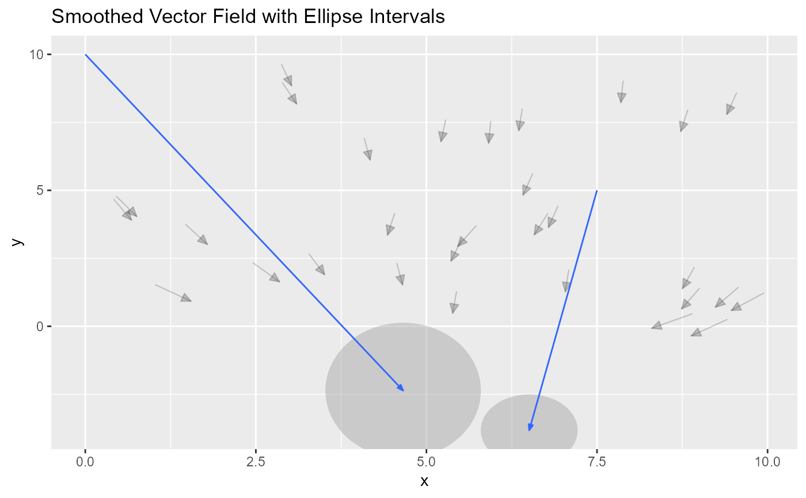

geom_vector_smooth generates a ggplot layer that visualizes a smooth vector
field by taking in raw vector data and applying smoothing techniques to
estimate the underlying vector field. This is similar in concept to how
geom_smooth() in ggplot2 estimates a smooth line, but for vector data
instead of scalar data.
Usage
StatVectorSmooth
GeomVectorSmooth
stat_vector_smooth(
mapping = NULL,
data = NULL,
geom = "vector_smooth",
position = "identity",
na.rm = FALSE,
show.legend = NA,
inherit.aes = TRUE,
n = c(11, 11),
scale_factor = 1,
method = "lm",
se = TRUE,
se.circle = TRUE,
probs = c(0.95, NA),
default_formula = cbind(dx, dy) ~ x * y,
arrow = grid::arrow(angle = 20, length = unit(0.015, "npc"), type = "closed"),
eval_points = NULL,
...
)
geom_vector_smooth(
mapping = NULL,
data = NULL,
stat = "vector_smooth",
position = "identity",
na.rm = FALSE,
show.legend = NA,
inherit.aes = TRUE,
n = c(11, 11),
scale_factor = 1,
method = "lm",
se = TRUE,
se.circle = TRUE,
probs = c(0.95, NA),
default_formula = cbind(dx, dy) ~ x * y,
arrow = grid::arrow(angle = 20, length = unit(0.015, "npc"), type = "closed"),
eval_points = NULL,
...
)Format
An object of class StatVectorSmooth (inherits from Stat, ggproto, gg) of length 6.
An object of class GeomVectorSmooth (inherits from GeomSegment, Geom, ggproto, gg) of length 8.
Arguments
- mapping
Set of aesthetic mappings created by
aes(). If specified andinherit.aes = TRUE(the default), it is combined with the default mapping at the top level of the plot. You must supplymappingif there is no plot mapping.- data
The data to be displayed in this layer. There are three options:
If
NULL, the default, the data is inherited from the plot data as specified in the call toggplot().A
data.frame, or other object, will override the plot data. All objects will be fortified to produce a data frame. Seefortify()for which variables will be created.A
functionwill be called with a single argument, the plot data. The return value must be adata.frame, and will be used as the layer data. Afunctioncan be created from aformula(e.g.~ head(.x, 10)).- geom
The geometric object to use to display the data for this layer. When using a
stat_*()function to construct a layer, thegeomargument can be used to override the default coupling between stats and geoms. Thegeomargument accepts the following:A
Geomggproto subclass, for exampleGeomPoint.A string naming the geom. To give the geom as a string, strip the function name of the
geom_prefix. For example, to usegeom_point(), give the geom as"point".For more information and other ways to specify the geom, see the layer geom documentation.
- position
A position adjustment to use on the data for this layer. This can be used in various ways, including to prevent overplotting and improving the display. The
positionargument accepts the following:The result of calling a position function, such as
position_jitter(). This method allows for passing extra arguments to the position.A string naming the position adjustment. To give the position as a string, strip the function name of the
position_prefix. For example, to useposition_jitter(), give the position as"jitter".For more information and other ways to specify the position, see the layer position documentation.
- na.rm
If
FALSE, the default, missing values are removed with a warning. IfTRUE, missing values are silently removed.- show.legend
logical. Should this layer be included in the legends?
NA, the default, includes if any aesthetics are mapped.FALSEnever includes, andTRUEalways includes. It can also be a named logical vector to finely select the aesthetics to display.- inherit.aes
If
FALSE, overrides the default aesthetics, rather than combining with them. This is most useful for helper functions that define both data and aesthetics and shouldn't inherit behaviour from the default plot specification, e.g.borders().- n
An integer vector specifying the number of grid points along each axis.
- scale_factor
Numeric; scales the length of the vectors to a given value. Useful for ensuring consistent lengths for visualization.
- method
Character; specifies the smoothing method to be used. Supported methods are
"lm"(linear modeling) and"boot"(bootstrapping)."boot"generates smoother results by calculating angles with bootstrapping, and the prediction intervals are determined using quantiles.- se
Logical; if
TRUE, plots the confidence intervals around the smoothed vectors.- se.circle
Logical; if
TRUE, draws circles around the origin of the vectors to represent the radius of the confidence interval. This is useful for visualizing variability whense = TRUE.- probs
Numeric vector; specifies the prediction interval levels to be plotted when
se = TRUE. Default isprobs = 0.95, but users can specify multiple levels (e.g.,probs = c(0.95, 0.68)).- default_formula
A formula specifying the model to fit for smoothing. Defaults to
cbind(dx, dy) ~ x * y.- arrow
Arrow specification, as created by
grid::arrow(). This controls the appearance of the arrowheads at the end of the vectors, including properties like angle, length, and type.- eval_points
Number of points at which the function is evaluated for smoothing.
- ...
Other arguments passed on to
layer()'sparamsargument. These arguments broadly fall into one of 4 categories below. Notably, further arguments to thepositionargument, or aesthetics that are required can not be passed through.... Unknown arguments that are not part of the 4 categories below are ignored.Static aesthetics that are not mapped to a scale, but are at a fixed value and apply to the layer as a whole. For example,
colour = "red"orlinewidth = 3. The geom's documentation has an Aesthetics section that lists the available options. The 'required' aesthetics cannot be passed on to theparams. Please note that while passing unmapped aesthetics as vectors is technically possible, the order and required length is not guaranteed to be parallel to the input data.When constructing a layer using a
stat_*()function, the...argument can be used to pass on parameters to thegeompart of the layer. An example of this isstat_density(geom = "area", outline.type = "both"). The geom's documentation lists which parameters it can accept.Inversely, when constructing a layer using a
geom_*()function, the...argument can be used to pass on parameters to thestatpart of the layer. An example of this isgeom_area(stat = "density", adjust = 0.5). The stat's documentation lists which parameters it can accept.The
key_glyphargument oflayer()may also be passed on through.... This can be one of the functions described as key glyphs, to change the display of the layer in the legend.
- stat
The statistical transformation to use on the data for this layer. When using a
geom_*()function to construct a layer, thestatargument can be used the override the default coupling between geoms and stats. Thestatargument accepts the following:A
Statggproto subclass, for exampleStatCount.A string naming the stat. To give the stat as a string, strip the function name of the
stat_prefix. For example, to usestat_count(), give the stat as"count".For more information and other ways to specify the stat, see the layer stat documentation.
Details
Mathematics of Prediction and Prediction Intervals:
This section explains the methods for computing predictions and prediction intervals using the x and y coordinates.
Linear Model (lm) Method
The "lm" method fits a multivariate linear regression to predict the vector
displacements dx and dy based on x and y.
Model:
b_0, b_1, b_2, and b_3 are the model coefficients.
e is the residual error.
Prediction: For a new grid point, the predicted displacements are:
X_i is the design matrix for the new grid point.
beta is the vector of estimated coefficients.
Prediction Intervals: The standard error of the prediction is:
V is the covariance matrix of the coefficients.
The prediction interval at confidence level (1 - alpha) is:
Bootstrapping (boot) Method
The "boot" method uses resampling to estimate angles and displacements.
Process:
Resample the original data with replacement.
Fit models for the sine and cosine of the vector angle:
Use the predicted sine and cosine to compute:
Prediction Intervals: Based on quantiles from bootstrapped angles:
Displacements: Using predicted angle theta and distance d:
Aesthetics
geom_vector_smooth understands the following aesthetics (required aesthetics are in bold):
x: x-coordinate of the starting point of the vector.y: y-coordinate of the starting point of the vector.dx: x-displacement of the vector.dy: y-displacement of the vector.angle: The angle of the vector in radians (optional, used withdistance).distance: The magnitude of the vector (optional, used withangle).color: The color of the vector line.linewidth: The thickness of the vector line.linetype: The type of the vector line (solid, dashed, etc.).alpha: The transparency level of the vector.arrow: Specification for arrowheads at the end of the vector.Additionally, when using smoothing:
norm: A computed variable representing the magnitude of the smoothed vector, available viaafter_stat().
Examples
library(ggvfields)
# Function to generate random vectors based on (x, y) inputs
generate_vectors <- function(v) {
x <- v[1]
y <- v[2]
c(sin(x) + sin(y) + rnorm(1, 5, 3), sin(x) - sin(y) + rnorm(1, 5, 3))
}
# Set seed for reproducibility
set.seed(123)
# Generate sample data
sample_points <- data.frame(
x = runif(50, min = -10, max = 10),
y = runif(50, min = -10, max = 10)
)
# Apply the generate_vectors function to each row
result <- t(apply(sample_points, 1, generate_vectors))
# Create new columns for displacements (dx, dy) and polar coordinates
sample_points$xend <- result[, 1]
sample_points$yend <- result[, 2]
sample_points$dx <- sample_points$xend - sample_points$x
sample_points$dy <- sample_points$yend - sample_points$y
sample_points$distance <- sqrt(sample_points$dx^2 + sample_points$dy^2)
sample_points$angle <- atan2(sample_points$dy, sample_points$dx)
# Example 1: Cartesian Coordinates with Linear Model (lm)
ggplot(sample_points, aes(x = x, y = y)) +
geom_vector_smooth(aes(dx = dx, dy = dy), method = "lm", se = TRUE) +
geom_vector(aes(dx = dx, dy = dy), color = "black") +
ggtitle("Vector Smoothing with Linear Model (lm)")
#> ~cbind(dx, dy)x * y
# Example 2: Polar Coordinates with Bootstrapping (boot)
ggplot(sample_points, aes(x = x, y = y, angle = angle, distance = distance)) +
geom_vector_smooth(method = "boot", se = TRUE, probs = c(0.95, 0.68)) +
geom_vector(aes(dx = dx, dy = dy), color = "black") +
ggtitle("Vector Smoothing with Bootstrapping (boot)")
#> Warning: Computation failed in `stat_vector_smooth()`.
#> Caused by error in `$<-.data.frame`:
#> ! replacement has 0 rows, data has 121
